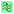
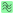

Processing Signals#
This section describes the signal processing features available in DataLab.
See also
Operations on Signals for more information on operations that can be performed on signals, or Analysis features on Signals for information on analysis features on signals.

Screenshot of the “Processing” menu.#
When the “Signal Panel” is selected, the menus and toolbars are updated to provide signal-related actions.
The “Processing” menu allows you to perform various processing on the selected signals, such as smoothing, normalization, or interpolation.
Axis transformation#
Linear calibration#
Create a new signal which is a linear calibration of each selected signal with respect to X or Y axis:
Parameter |
Linear calibration |
|---|---|
X-axis |
\(x_{1} = a.x_{0} + b\) |
Y-axis |
\(y_{1} = a.y_{0} + b\) |
Swap X/Y axes#
Create a new signal which is the result of swapping X/Y data.
Reverse X-axis#
Create a new signal which is the result of reversing X data.
Level adjustment#
Normalize#
Create a new signal which is the normalization of each selected signal by maximum, amplitude, sum, energy or RMS:
Parameter |
Normalization |
|---|---|
Maximum |
\(y_{1}= \dfrac{y_{0}}{max(y_{0})}\) |
Amplitude |
\(y_{1}= \dfrac{y_{0}'}{max(y_{0}')}\) with \(y_{0}'=y_{0}-min(y_{0})\) |
Area |
\(y_{1}= \dfrac{y_{0}}{\sum_{n=0}^{N}y_{0}[n]}\) |
Energy |
\(y_{1}= \dfrac{y_{0}}{\sqrt{\sum_{n=0}^{N}|y_{0}[n]|^2}}\) |
RMS |
\(y_{1}= \dfrac{y_{0}}{\sqrt{\dfrac{1}{N}\sum_{n=0}^{N}|y_{0}[n]|^2}}\) |
Clipping#
Create a new signal which is the result of clipping each selected signal.
Offset correction#
Create a new signal which is the result of offset correction of each selected signal. This operation is performed by subtracting the signal baseline which is estimated by the mean value of a user-defined range.
Noise reduction#
Create a new signal which is the result of noise reduction of each selected signal.
The following filters are available:
Filter |
Formula/implementation |
|---|---|
Gaussian filter |
|
Moving average |
|
Moving median |
|
Wiener filter |
Fourier analysis#
Create a new signal which is the result of a Fourier analysis of each selected signal.
The following functions are available:
Function |
Description |
Formula/implementation |
|---|---|---|
FFT |
Fast Fourier Transform |
|
Inverse FFT |
Inverse Fast Fourier Transform |
|
Magnitude spectrum |
Optionnal: use logarithmic scale (dB) |
\(y_{1} = |FFT(y_{0})|\) or \(20.log_{10}(|FFT(y_{0})|)\) (dB) |
Phase spectrum |
\(y_{1} = \angle FFT(y_{0})\) |
|
Power spectral density (PSD) |
Optionnal: use logarithmic scale (dB). PSD is estimated using Welch’s method (see scipy.signal.welch) |
\(Y_{k} = PSD(y_{k})\) or \(10.log_{10}(PSD(y_{k}))\) (dB) |
Note
FFT and inverse FFT are performed using frequency shifting if the option is enabled in DataLab settings (see Settings).
Frequency filters#
Create a new signal which is the result of applying a frequency filter to each selected signal.
The following filters are available:
Filter |
Description |
|---|---|
|
Filter out high frequencies, above a cutoff frequency |
|
Filter out low frequencies, below a cutoff frequency |
 Band-pass |
Filter out frequencies outside a range |
 Band-stop |
Filter out frequencies inside a range |
 Low-pass
Low-pass High-pass
High-passFor each filter, the following methods are available:
Method |
Description |
|---|---|
Bessel |
Bessel filter, using SciPy’s scipy.signal.bessel function |
Butterworth |
Butterworth filter, using SciPy’s scipy.signal.butter function |
Chebyshev I |
Chebyshev type I filter, using SciPy’s scipy.signal.cheby1 function |
Chebyshev II |
Chebyshev type II filter, using SciPy’s scipy.signal.cheby2 function |
Elliptic |
Elliptic filter, using SciPy’s scipy.signal.ellip function |
Fitting#
Open an interactive curve fitting tool in a modal dialog box.
Model |
Equation |
|---|---|
Linear |
\(y = c_{0}+c_{1}.x\) |
Polynomial |
\(y = c_{0}+c_{1}.x+c_{2}.x^2+...+c_{n}.x^n\) |
Gaussian |
\(y = y_{0}+\dfrac{A}{\sqrt{2\pi}.\sigma}.exp(-\dfrac{1}{2}.(\dfrac{x-x_{0}}{\sigma})^2)\) |
Lorentzian |
\(y = y_{0}+\dfrac{A}{\sigma.\pi}.\dfrac{1}{1+(\dfrac{x-x_{0}}{\sigma})^2}\) |
Voigt |
\(y = y_{0}+A.\dfrac{Re(exp(-z^2).erfc(-j.z))}{\sqrt{2\pi}.\sigma}\) with \(z = \dfrac{x-x_{0}-j.\sigma}{\sqrt{2}.\sigma}\) |
Multi-Gaussian |
\(y = y_{0}+\sum_{i=0}^{K}\dfrac{A_{i}}{\sqrt{2\pi}.\sigma_{i}}.exp(-\dfrac{1}{2}.(\dfrac{x-x_{0,i}}{\sigma_{i}})^2)\) |
Exponential |
\(y = y_{0}+A.exp(B.x)\) |
Sinusoidal |
\(y = y_{0}+A.sin(2\pi.f.x+\phi)\) |
Cumulative Distribution Function (CDF) |
\(y = y_{0}+A.erf(\dfrac{x-x_{0}}{\sigma.\sqrt{2}})\) |
Windowing#
Create a new signal which is the result of applying a window function to each selected signal.
The following window functions are available:
Window function |
Reference |
|---|---|
Barthann |
|
Bartlett |
|
Blackman |
|
Blackman-Harris |
|
Bohman |
|
Boxcar |
|
Cosine |
|
Exponential |
|
Flat top |
|
Gaussian |
|
Hamming |
|
Hanning |
|
Kaiser |
|
Lanczos |
|
Nuttall |
|
Parzen |
|
Rectangular |
|
Taylor |
|
Tukey |
Detrending#
Create a new signal which is the detrending of each selected signal. This features is based on SciPy’s scipy.signal.detrend function.
The following parameters are available:
Parameter |
Description |
|---|---|
Method |
Detrending method: ‘linear’ or ‘constant’. See SciPy’s scipy.signal.detrend function. |
Interpolation#
Create a new signal which is the interpolation of each selected signal with respect to a second signal X-axis (which might be the same as one of the selected signals).
The following interpolation methods are available:
Method |
Description |
|---|---|
Linear |
Linear interpolation, using using NumPy’s interp function |
Spline |
Cubic spline interpolation, using using SciPy’s scipy.interpolate.splev function |
Quadratic |
Quadratic interpolation, using using NumPy’s polyval function |
Cubic |
Cubic interpolation, using using SciPy’s Akima1DInterpolator class |
Barycentric |
Barycentric interpolation, using using SciPy’s BarycentricInterpolator class |
PCHIP |
Piecewise Cubic Hermite Interpolating Polynomial (PCHIP) interpolation, using using SciPy’s PchipInterpolator class |
Resampling#
Create a new signal which is the resampling of each selected signal.
The following parameters are available:
Parameter |
Description |
|---|---|
Method |
Interpolation method (see previous section) |
Fill value |
Interpolation fill value (see previous section) |
Xmin |
Minimum X value |
Xmax |
Maximum X value |
Mode |
Resampling mode: step size or number of points |
Step size |
Resampling step size |
Number of points |
Resampling number of points |
ROI extraction#
Create a new signal from a user-defined Region of Interest (ROI).

ROI extraction dialog: the ROI is defined by moving the position and adjusting the width of an horizontal range.#